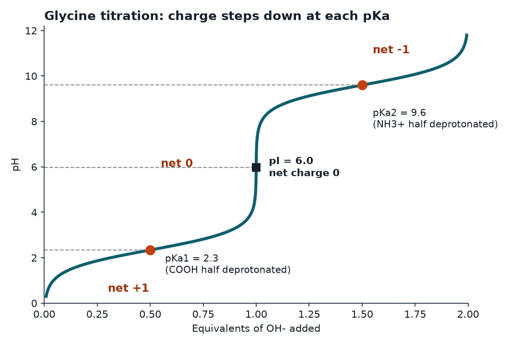

Free MCAT study note
Amino Acid pKa Values and Charge at pH 7.4
Every amino acid is a small acid-base system, and the MCAT keeps asking the same three questions about it: what is its charge at a given pH, what is its isoelectric point (pI), and where does it buffer? This note gives you one method that answers all three, plus the handful of numbers worth memorizing.
The two groups every amino acid has
Each free amino acid has a central alpha carbon bonded to an amino group, a carboxyl group, a hydrogen, and a variable side chain (the R group). The two backbone groups ionize the same way in nearly every amino acid:
- The alpha carboxyl group has a pKa near 2. Above that pH it has lost its proton and carries a negative charge (COO-).
- The alpha amino group has a pKa near 9 to 10. Below that pH it still holds its extra proton and carries a positive charge (NH3+).
Because 7.4 sits far above 2 and far below 9, both groups are charged at physiological pH. The positive and negative charges cancel, so an amino acid with a neutral side chain is a zwitterion with a net charge of zero. A zwitterion is a molecule with both a positive and a negative charge but no net charge overall.

Reading a titration curve
The diagram plots pH against the equivalents of base added to glycine, an amino acid with no ionizable side chain. Start at the bottom, where the pH is low and glycine is fully protonated with a net charge of +1. As you add base, three features matter.
- Flat regions are buffer zones. Near each pKa the pH barely moves as base is added, because the group is converting from protonated to deprotonated and soaks up the added hydroxide. At exactly the pKa, half of that group is protonated.
- Steep regions are the transitions. Between the two pKa values, almost all of the molecules are the zwitterion. The pH at the middle of that steep stretch is the pI.
- The ends are fully converted. Far above the second pKa, glycine is almost entirely in the form with a deprotonated amino group and a net charge of -1.
The shortcut for exam day: the net charge steps down by one unit every time you pass a pKa as pH rises. For glycine, +1 below about 2.3, 0 between roughly 2.3 and 9.6, and -1 above 9.6.
The side chain pKa values to know
Seven of the standard side chains ionize appreciably in water, and these are the ones the MCAT asks about. Values differ by a few tenths between textbooks, so treat these as approximate and use the numbers your passage gives you.
| Side chain | Group | Approx. pKa | Form at pH 7.4 |
|---|---|---|---|
| Aspartate (Asp, D) | carboxyl | 3.9 | negative (-1) |
| Glutamate (Glu, E) | carboxyl | 4.1 | negative (-1) |
| Histidine (His, H) | imidazole | 6.0 | mostly neutral, a few percent positive |
| Cysteine (Cys, C) | thiol | 8.3 | mostly neutral (SH) |
| Tyrosine (Tyr, Y) | phenol | 10.1 | neutral |
| Lysine (Lys, K) | amino | 10.5 | positive (+1) |
| Arginine (Arg, R) | guanidinium | 12.5 | positive (+1) |
Notice the pattern. The two acidic residues are negative at 7.4 because 7.4 is more than three units above their pKa values. The two strongly basic residues, lysine and arginine, are positive because 7.4 is far below their pKa values. Histidine is the interesting one, because its pKa is close enough to physiological pH that small shifts matter. That is exactly why histidine shows up in enzyme active sites and in buffering.
How "mostly neutral" works out
A group is half ionized at its pKa and about 90 percent ionized one unit away from it. For histidine at pH 7.4, the pH is 1.4 units above the pKa of 6.0, so the ratio of deprotonated to protonated imidazole is 101.4, about 25 to 1. Only about 4 percent of free histidine side chains carry the positive charge. For cysteine, the pH is 0.9 units below its pKa of 8.3, so roughly 11 percent of free cysteine thiols are deprotonated. Neither is a clean on-off switch, which is why test writers like them.
A method that works for any amino acid
To find the net charge at a given pH, walk through each ionizable group and ask one question: is the pH above or below this group's pKa?
- Group protonated (pH below pKa): acid groups are neutral, amine groups are positive.
- Group deprotonated (pH above pKa): acid groups are negative, amine groups are neutral.
Then add up the charges. For lysine at pH 7.4 the alpha carboxyl is negative, the alpha amino (pKa about 9) is positive, and the side chain amino (pKa 10.5) is positive, giving +1. For aspartate at pH 7.4 the alpha carboxyl is negative, the side chain carboxyl is negative, and the alpha amino is positive, giving -1. At pH 1, aspartate would be +1, because all of its groups are protonated and only the amino group holds a charge.
Calculating the isoelectric point (pI)
The pI is the pH at which the net charge is zero. The reliable way to find it is to average the two pKa values that sit on either side of the neutral form.
- Neutral side chain: average the alpha carboxyl pKa and the alpha amino pKa. Glycine: (2.3 + 9.6) / 2, about 6.0.
- Acidic side chain: the neutral form sits between the two acidic pKa values, so average those. Glutamate: (2.2 + 4.1) / 2, about 3.2.
- Basic side chain: average the two highest pKa values. Lysine: (9.0 + 10.5) / 2, about 9.8. Histidine: (6.0 + 9.2) / 2, about 7.6.
The pattern is easy to remember. Acidic amino acids have a low pI, basic amino acids have a high pI, and everything else lands near neutral. To check that you have picked the right pair of pKa values, count the charges on the species between them: it should be the one with zero net charge.
Why the pI matters on the MCAT
The pI predicts behavior, and these are the effects that get tested.
- Electrophoresis and isoelectric focusing. In an electric field, a molecule at a pH below its pI carries a net positive charge and moves toward the cathode (the negative electrode). At a pH above its pI it is net negative and moves toward the anode. At the pI it does not migrate. Isoelectric focusing exploits this by running proteins through a pH gradient until each one stops at its own pI.
- Solubility. A molecule with no net charge has no electrostatic repulsion from its neighbors, so proteins are usually least soluble at their pI and tend to precipitate there.
- Ion exchange chromatography. At a pH below its pI, a protein is positively charged and sticks to a negatively charged (cation exchange) column. Above its pI it sticks to a positively charged (anion exchange) column.
The same logic scales from single amino acids to whole proteins. The pI of a protein depends mainly on the proportions of its acidic and basic side chains, plus its terminal groups.
Common traps
- Forgetting the alpha groups. A question about aspartate at pH 7.4 is not about the side chain alone. Count all three groups.
- Using the wrong pKa pair for pI. Draw the charge ladder from +2 or +1 down to the most negative form and pick the two pKa values that bracket zero.
- Treating pKa as fixed in a protein. Inside a folded protein, the local environment shifts pKa values, sometimes by several units. A buried aspartate near a negative charge can hold onto its proton at a pH where a free aspartate would have let go. If a passage tells you an unusual pKa for a residue, use it.
- Assuming histidine is charged at 7.4. It is mostly neutral on its own. It acts as a proton donor or acceptor near physiological pH, which is the reason it is so common in catalysis.
One-minute recap
Backbone groups are about pKa 2 and 9 to 10. Acidic side chains are around 4, histidine around 6, cysteine near 8, tyrosine near 10, lysine near 10.5, arginine near 12.5. Pass a pKa going up in pH and the charge drops by one. The pI is the average of the two pKa values around the neutral species. At pH 7.4, Asp and Glu are negative, Lys and Arg are positive, and almost everything else is neutral or a zwitterion with no net charge.
Check yourself: 5-question mini-quiz
1. What is the net charge of glutamate at pH 7.4?
-1. The alpha carboxyl is deprotonated (negative), the side chain carboxyl (pKa about 4.1) is deprotonated (negative), and the alpha amino group is still protonated (positive). Two negatives and one positive give -1.
2. Calculate the approximate pI of lysine using alpha amino pKa 9.0 and side chain pKa 10.5.
About 9.8. Lysine has a basic side chain, so the zero-charge species sits between the alpha amino and side chain amino pKa values. Average them: (9.0 + 10.5) / 2 = 9.75.
3. A protein has a pI of 5.5 and is placed in a buffer at pH 8.0 in an electric field. Which way does it move?
Toward the anode (the positive electrode). The pH is above the pI, so the protein carries a net negative charge and migrates toward the positive pole.
4. Which standard amino acid side chain has a pKa closest to physiological pH, and why does that matter?
Histidine, with an imidazole pKa near 6.0. Its protonation state can switch with small changes in pH, so it acts as a proton donor or acceptor in enzyme active sites and as a buffer near neutral pH.
5. Which of these is a poor buffering pH for glycine (pKa values 2.3 and 9.6): 2.3, 6.0, or 9.6?
6.0 is the poor one; 2.3 and 9.6 are good buffering points. A group buffers best near its own pKa, where it is half protonated. At 6.0 (the pI) glycine is almost entirely zwitterion and resists pH change poorly.